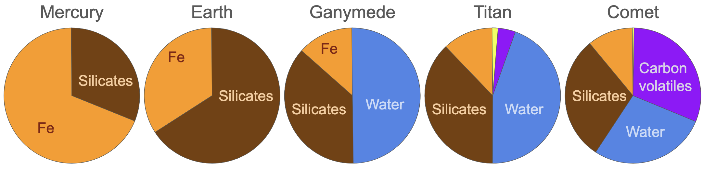
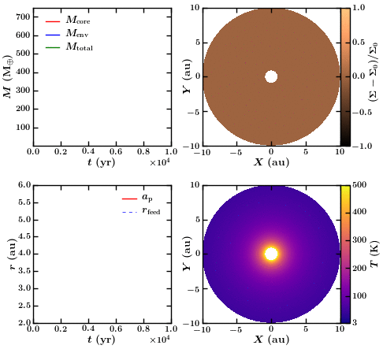
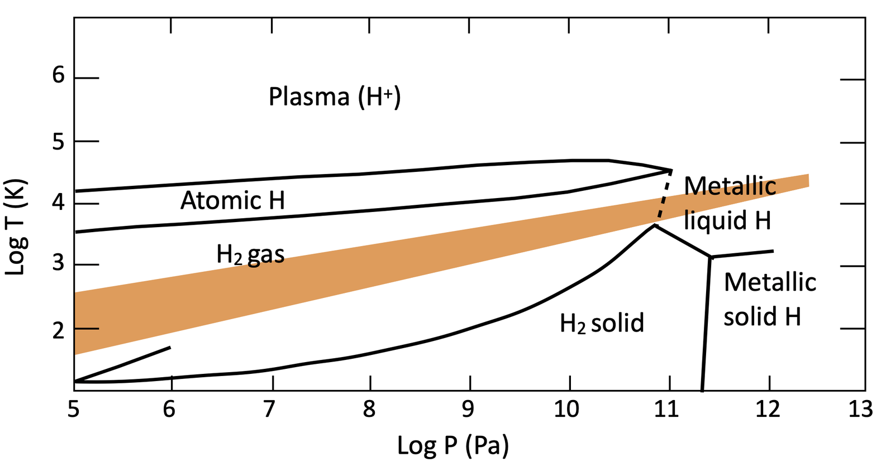
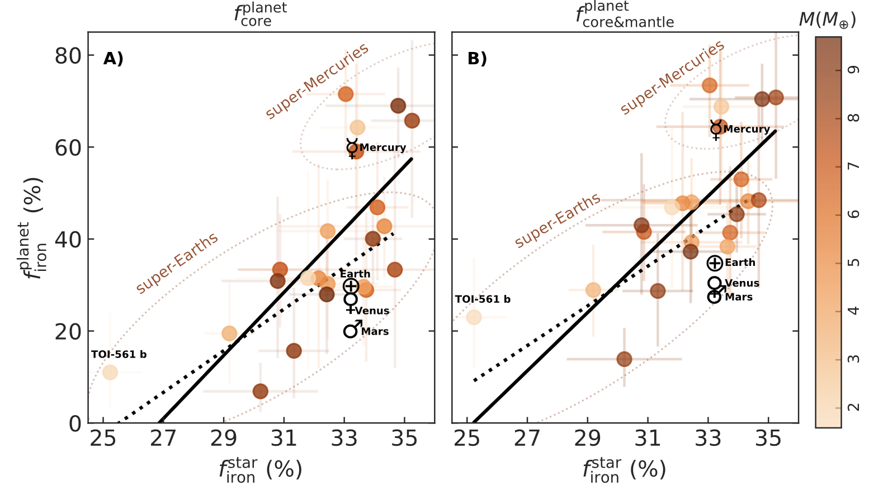
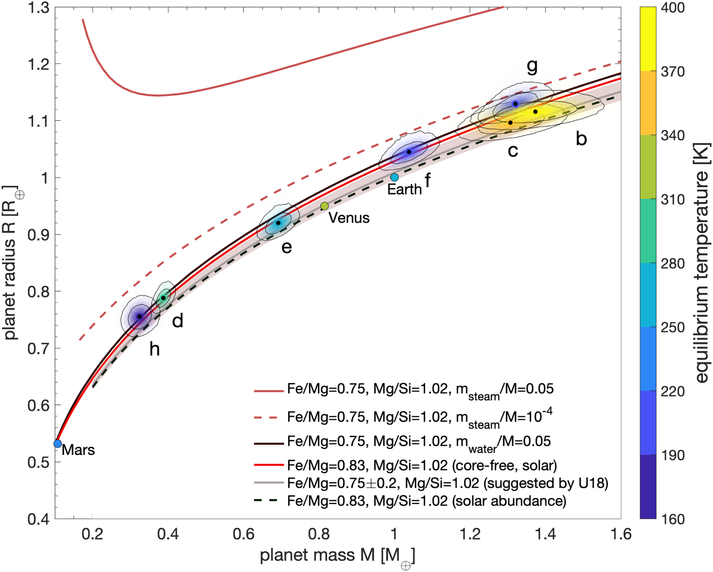
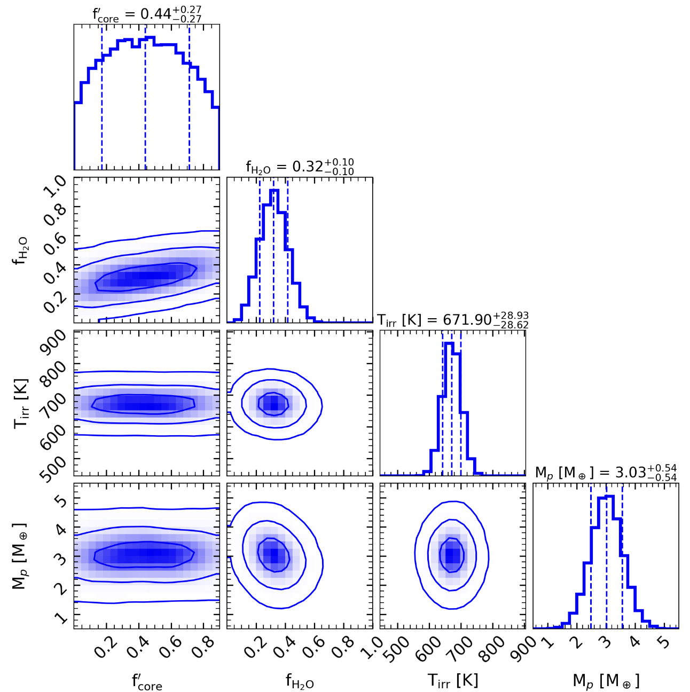
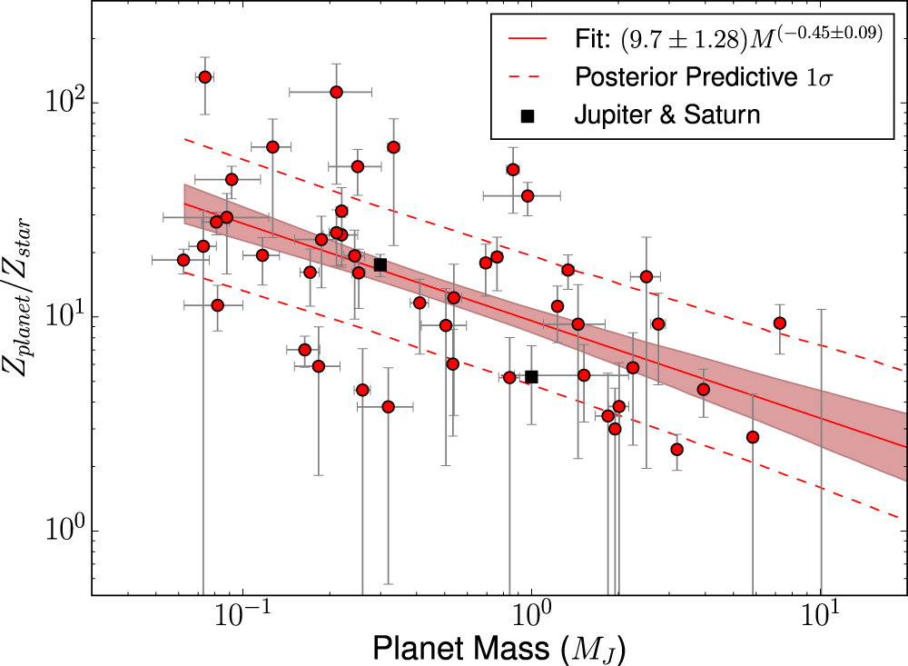

# Modelling planetary interiors <ul class="contents-list"> <li><a href="#/part-1"><strong>Part 1:</strong> The building blocks of planets</a></li> <li><a href="#/part-2"><strong>Part 2:</strong> Modelling interior structures</a></li> <li><a href="#/part-3"><strong>Part 3:</strong> Projects</a></li> <li><a href="#/part-4"><strong>Part 4:</strong> Extra Resources</a></li> </ul> --- <h2 id="part-1" class="slide-part-title">Part 1: The building blocks of planets</h2> - <span class="fragment">Angular momentum conservation during star formation means discs form</span> - <span class="fragment">Dust falls to the midplane and can clump together, growing into protoplanets</span> <div style="text-align: center; width: 100%;"><img src="../slide_data/slide_images/ALMA-DSHARP.png" style="max-height: 450px; max-width: 100%; object-fit: contain; display: block; margin: 0 auto;" /></div> -v- ## Planet formation - <span class="fragment">The **elemental abundances** of material in the disc should be **identical to the star**.</span> - <span class="fragment">We see similar elemental abundance ratios (Fe, Si, Mg, etc) across all terrestrial planets.</span> - <span class="fragment">Solid dust grains lack H, He, Ne, Ar, etc</span> - <span class="fragment">**Dust composition is modified with orbital distance** due to sublimation & condensation of volatiles at ice lines (H$_2$O, but also CO$_2$, CH$_4$, etc).</span> - <span class="fragment">Close-in material is only rocky (Fe, Mg, Si, O)</span> - <span class="fragment">Dust in distant regions is more volatile-dominated (C, N, S, O).</span> -v- ## Planet formation - The change in compositions with distance is clearly visible in the difference between rocky planets, icy moons, & comets <span class="fragment"><div style="text-align: center; width: 100%;"><p></p></div></span> -v- ## Growth - <span class="fragment">Pebble-sized dust clumps together into **planetesimals** - gravitationally bound and not blown around by the gas ($>1$ km, 100kyr).</span> - <span class="fragment">Collisions between planetesimals and/or accretion of smaller material from the disc (pebbles) grows these into **protoplanets** ($>1000$km, $\sim1$Myr) and beyond.</span> - <span class="fragment">Protoplanets undergo **differentiation** which sorts planets by density.</span> - <span class="fragment">Typically: Core = free iron (and siderophile elements); mantle = magnesiums silicates; atmosphere = volatiles & H-He</span> - <span class="fragment">Once cooled, the atmosphere may further separate into ice/ocean layers under H-He (e.g. Ice Giants)</span> <span class="fragment"><div style="text-align: center; width: 100%;"><img src="https://upload.wikimedia.org/wikipedia/commons/1/12/MIT_12.007_Geobiology%2C_Spring_2007_-_Differentiation_of_Earth.jpg" style="height: 250px;" /></div></span> -v- ## Growth in the gas disc - <span class="fragment">Planets that grow massive enough ($\sim 10M_\oplus$) inevitably start to accrete nebular gas extremely efficiently - _runaway accretion_ of gas giants.</span> - <span class="fragment">Small ($\sim1M_\oplus$) planets can also accrete some gas ($<1$%) from the gas disc producing a primordial atmosphere of H-He.</span> - <span class="fragment">After $\sim10$Myr, the gas disc is evaporated by stellar high-energy radiation, stopping any further accretion (either of gas or pebbles)</span> - <span class="fragment">Protoplanets can continue to grow via giant impacts (e.g. Earth's moon-forming impact)</span> -v- ## Migration - <span class="fragment">Planets peturb the disc around them, but as there is more dust outside this leads to a deceleration of the planet causing migration inwards.</span> - <span class="fragment">This can be rapid ($\ltapprox 1$Myr), especially for large ($1-20M_\oplus$) planets</span> - <span class="fragment">Giant planets ($>0.1M_J$) are large enough to open a gap in the disc, but torques with the gap edge still lead to (slower) inward migration</span> - <span class="fragment">Other planets can cause large influence on planetary position:</span> - <span class="fragment">An exterior planet may halt migration (e.g Jupiter-Saturn)</span> - <span class="fragment">Gravitational interactions can also scatter planets in/out after the gas disc is stripped</span> -v- ## Migration <div style="text-align: center; width: 100%;"><p></p></div> -v- ## Mass loss - <span class="fragment">Planets can also lose material:</span> - <span class="fragment">Close-in planets can lose mass through **evaporation** of gaseous envelope (H/He)</span> - <span class="fragment">**Collisions/giant impacts** can also remove material, especially outer layers (e.g. Mercury's large core?)</span> -v- ## The fundamentals - There are four fundamental reservoirs: - <span class="fragment">**Iron**</span> - <span class="fragment">**Silicates** (sometimes considered with Iron for simplicity)</span> - <span class="fragment">**Volatiles** (dominated by water, especially for formation $<5$AU; sometimes assume equal parts ice:rock)</span> - <span class="fragment">**Gas** (H & He; can be assumed to be protosolar ratio, i.e. 27% He by mass)</span> - <span class="fragment">**Small planets** ($\lessapprox15M_\oplus$) are dominated by material from **dust**, and:</span> - <span class="fragment">Orbital distance of formation determines **volatile content**</span> - <span class="fragment">Stellar abundances determine iron/rock content (e.g. core-mass fraction, CMF)</span> - <span class="fragment">Large planets are dominated by **H-He gas**</span> --- <h2 id="part-2" class="slide-part-title">Part 2: Modelling interior structures</h2> ## Observations - <span class="fragment">Typically we have (if we are lucky) two direct measurements of the planet:</span> - <span class="fragment">Planetary mass (from e.g. RVs or TTVs)</span> - <span class="fragment">Planetary radius (from e.g. transits)</span> - <span class="fragment">(In addition, planetary orbit/temperature)</span> - <span class="fragment">These, combined with other assumptions, can give us useful information on what combinations of the four materials might be present</span> - <span class="fragment">Such models are complex but the data is extremely limited, meaning interior structure modelling is always highly **degenerate**/**underconstrained**/**prior-dominated**.</span> -v- ## Giant planet modelling - <span class="fragment">Given the mass is dominated by gas, the simplest assumption is to only model two materials: a gas envelope, and some fraction of rock/iron/volatiles</span> - <span class="fragment">Volatiles : rock+iron ratio (ice-to-rock) is assumed 1:1</span> - <span class="fragment">Need to assume something about the core-envelope boundary:</span> - <span class="fragment">Fully separated (with some small fraction of metals in the atmosphere $Z_{\rm atm}$)</span> - <span class="fragment">Fuzzy/dilute core, as suggested for Jupiter (Juno observations)</span> - <span class="fragment">Fully mixed</span> <span class="fragment"><div style="text-align: center; width: 100%;"><img src="../slide_data/slide_images/giant_interior_core_envelope.png" style="height: 250px;" /></div></span> -v- ## Modelling Assumptions - Modelling is built on the following key differential equations: - <span class="fragment">**Conservation of mass**: $ \frac{\partial m}{\partial r} = 4\pi r^2 \rho $</span> - <span class="fragment">**Hydrostatic equilibrium**: $\frac{\partial P}{\partial r} = - \rho g $ - Gravity is balanced by pressure gradient.</span> - <span class="fragment">**Energy transport**: $\frac{\partial T}{\partial r} = \frac{\partial P}{\partial r} \frac{T}{P}\nabla_T$ - Hotter layers transport thermal energy to cooler layers</span> - <span class="fragment">**Energy conservation**: $\frac{\partial L}{\partial r} = 4\pi r^2 \rho(\dot{\epsilon} - T\frac{\partial S}{\partial t}) $ - L is the local intrinsic luminosity, & $\frac{\partial S}{\partial t}$ is the rate of change of specific entropy with time.</span> - <span class="fragment">$\dot{\epsilon}$ is nuclear energy (e.g. fusion or decay; $\dot{\epsilon}\sim0$)</span> -v- ## Thermal effects - <span class="fragment">The interiors of planets are hotter than their surfaces</span> - <span class="fragment">Planets also start substantially hotter (i.e. higher local intrinsic luminosity), hence cool & contract with act.</span> - <span class="fragment">Thermal transport outwards can occur through radiation, conduction, or, (when these are insufficient), convection.</span> - <span class="fragment">The **opacity** of the atmosphere (especially near the blackbody peak for a layer's temperature) determines if radiation is efficient.</span> - <span class="fragment">In the upper atmosphere of giants ($T\lessapprox1200$K) H$_2$O, CH$_4$, and collision-induced absorption by H$_2$.</span> - <span class="fragment">At deeper and hotter layers, metals (e.g. K, Na, TiO) and ions (e.g. $H^{\rm -}$) can cause convective layers</span> <span class="fragment"><!--- The temperature gradient, $\nabla_T$, depends on the process that dominates the energy transport - adiabatic (simplest), or convective (which may also mix compositional gradients)--></span> -v- ## Equations of State - <span class="fragment">In all materials, increasing pressure leads to increased temperature</span> - <span class="fragment">In some materials, moving to a different region of P-T space causes fundamental phase change (e.g. solid-liquid-gas)</span> - <span class="fragment">Knowing the exact P-T curve and phase changes that a material follows in P-T space is key to understanding planetary interiors.</span> - <span class="fragment">For this, we need to know the equations of state; $f\left(p,V,T\right)=0$</span> <span class="fragment"><div style="text-align: center; width: 100%;"><p></p></div></span> -v- ## Equations of State - <span class="fragment">Classically, we would measure a material's pressure & volume at different temperatures.</span> - <span class="fragment">But giant planet interiors require extreme pressures & temperatures not reachable in the lab.</span> - <span class="fragment">Additional complexities include its partially-degenerate fluid state, and interactions of atoms, molecules and ions.</span> - <span class="fragment">Metallic hydrogen should be soluble to rock-forming minerals (Fe, MgO, SiO$_2$, etc) in Jupiter's core.</span> - <span class="fragment">H$_2$O & H/He are also soluble at moderate temperatures/pressures.</span> - <span class="fragment">Varying amounts of heavy elements also add complexity - often pure EoSs are "mixed" together</span> - <span class="fragment">_Ab initio_ calculations are used to compute EoS at extreme pressures</span> -v- ## Forward modelling interiors <!--- Hydrostatic equlibrium--> <span class="fragment">**We cannot typically take the observed mass & radius and compute expected composition**</span> - <span class="fragment">Instead we need to take some combination of materials (e.g. 2Me iron, 3Me silicates, 4Me water, 0.1Me H-He) and ask _what radius would this planet have?_.</span> - <span class="fragment">Modelling the interior requires the following:</span> 1) <span class="fragment">Guess a central pressure</span> 2) <span class="fragment">Build the core layer outwards following the EoS (and tracking e.g. p, T, V, phase, etc) until the total layer mass is reached</span> 3) <span class="fragment">At a new layer, switch to the corresponding EoS</span> 4) <span class="fragment">When total mass is reached, calculate final pressure ($P_{\rm surf}$) & radius</span> 5) <span class="fragment">Iterate this process until $P_{\rm surf}=0$, producing the expected radius for the given input parameters</span> -v- ## Constraining mass fractions - <span class="fragment">We really care about the fraction of a planet in each material type</span> - <span class="fragment">To get this, we need to sample the forward model for different input parameter prior distributions</span> - <span class="fragment">We can then use this to get a **posterior** for each material telling us what the allowed mass fractions are</span> -v- ## Mass regimes 1) Rocky planets - <span class="fragment">Planets with earthlike radii/mass can be assumed to have no H/He.</span> - <span class="fragment">This is especially true for highly irradiated planets</span> - <span class="fragment">The most simplistic approach would be to assume they are only formed of an iron core and silicate mantle.</span> - <span class="fragment">This approach is linear, allowing a simple _inversion_ to estimate the CMF.</span> - <span class="fragment">This has enabled, for example, tests of whether Fe & Mg abundances in exoplanet host stars cause [observable changes in core mass fractions](https://arxiv.org/pdf/2102.12444)</span> <span class="fragment"><div style="text-align: center; width: 100%;"><p></p></div></span> -v- ## Mass regimes 1) Rocky planets <div style="text-align: center; width: 100%;"><p></p></div> -v- ## Mass regimes 2) Intermediate planets - Super-Earths and sub-Neptunes ($1.5<R<5R_\oplus$ & $3<M<30M_\oplus$) are the most complex planets - They may host all four materials (e.g. water and volatiles) - With only mass and radius, we have large degeneracies between solutions: - A $4R_\oplus$/$10M_\oplus$ planet could be 95% rock+iron and 5% H-He, or 40% rock+iron and 60% water. - The treatment of volatiles is particularly complex, as the following locations of water produce vastly different EoS: - Water completely [absorbed into a high-pressure silicate mantle](https://www.nature.com/articles/s41550-024-02347-z) - Water as an [ocean layer below a H-He atmosphere](https://arxiv.org/pdf/2406.12794) - Water fully mixed with H-He gas as a miscible supercritical atmosphere (a **Neptini** - like mixed [vodka & water](https://astrobites.org/2026/03/12/mixing-planetary-cocktails/)) -v- ## Mass regimes 2) Intermediate planets <div style="text-align: center; width: 100%;"><p></p></div> -v- ## Mass regimes 3) Giant planets - <span class="fragment">Can be once again treated simplistically as a mix of H-He and "metals"</span> - <span class="fragment">Metallicity can be measured in two ways:</span> - <span class="fragment">As a **mass ratio** with respect to solar values, denoted by $Z$</span> - <span class="fragment">$\log{Z}=1$ means 10x solar metallicity - atmospere is 95% H-He and ~5% metals</span> - <span class="fragment">$\log{Z}\lessapprox1.85$ given solar metal mass fraction is $Z\approx0.014$</span> - <span class="fragment">As a **log number ratio** with respect to hydrogen (normalised to the Sun):</span> - <span class="fragment">$[\text{M}/\text{H}] \equiv \log_{10}\left(\frac{N_{\text{metals}}}{N_{\text{H}}}\right)_{\text{planet}} - \log_{10}\left(\frac{N_{\text{metals}}}{N_{\text{H}}}\right)_{\odot}$</span> - <span class="fragment">An atmosphere with 33% water (by mass) has $M/H=70x$ or $[M/H]=1.84$</span> - <span class="fragment">Mars' CO$_2$ dominated atmosphere has $[M/H]>4$ (>10000x solar).</span> - <span class="fragment">Metallicities can also be normalised to stellar (rather than solar) values.</span> -v- ## Mass regimes 3) Giant planets - <span class="fragment">Metallicity measurements can once again allow some testing of hypothetical link between [stellar and planetary abundances](https://iopscience.iop.org/article/10.3847/0004-637X/831/1/64)</span> - <span class="fragment">More interestingly, the metal fraction of giant planets clearly decreases with planet mass - largest planets are most star-like.</span> - <span class="fragment">This is expected from runaway accretion):</span> <span class="fragment"><div style="text-align: center; width: 100%;"><p></p></div></span> --- <h2 id="part-3" class="slide-part-title">Part 3: Projects</h2> ## General advice - Interior stucture models are underconstrained, i.e. we have a lot more complexity in the model than we have constraints from the data. Things like model comparison aren't so useful - <span class="fragment">Interior structure models are typically only applicable for their preferred mass range (usually determined by available EoS)</span> - <span class="fragment">Giant planets typically derive only "metallicity"</span> - <span class="fragment">Sub-Neptunes are much more complex, and may be interesting to see:</span> - <span class="fragment">Water-rich model (e.g. water mass fraction $10<w_{\rm H2O}<40\%$) either with or without H-He gas</span> - <span class="fragment">Gas-only model</span> - <span class="fragment">Potentially both could have the CMF value fixed to either earth-like, or the expected CMF given the stellar Fe & Mg abundances</span> - <span class="fragment">Rocky planets are again simple:</span> - <span class="fragment">Could derive the CMF</span> - <span class="fragment">Could see how much water a planet could contain assuming fixed CMF and no H-He gas</span> -v- ## Other advice - <span class="fragment">Only use transiting planets with precise masses</span> - <span class="fragment">Hot Jupiters typically do not produce reliable interior structure estimates (high external heating, unknown additional inflation component), so avoid giant planets with $T_{\rm eq}>700$K.</span> -v- ## Modelling packages - All of the following will need to be git installed using (e.g.) `git clone https://github.com/cpiaulet/smint.git` (ideally in the `all_code` directory) - <span class="fragment">[**smint** (Piaulet)](https://github.com/cpiaulet/smint) - python-based EoS package for rocky and sub-Neptune interiors</span> - <span class="fragment">[**ExoMDN** (Baumeister)](https://github.com/philippbaumeister/ExoMDN) - Requires older python versions (due to tensorflow install)</span> - <span class="fragment">[**planetsynth** (Muller)](https://github.com/tiny-hippo/planetsynth) - python-based giant planet interior modelling code</span> - <span class="fragment">[**GASTLI** (Acuna)](https://gastli.readthedocs.io) - needs a Fortran compiler</span> - <span class="fragment">[**PlaNETic** (Egger)](https://github.com/joannegger/plaNETic) - Neural-network-based interior structure modelling (but heavy/slow; not in script)</span> -v- ## The coding scripts: - `rocky_interiors.py`: - Looks at the seven TRAPPIST-1 planets (core mass fractions) - `subnept_interiors.py`: - Looks at the planets in the TOI-270d system with a water-rich and gas-rich model - `giant_interiors.py`: - Uses **planetsynth** & **GASTLI** to look at HD 148797 and TOI-4504 c giant planets -v- ## Project ideas: - Use the exoplanet archive to pick two or three planets with: - A radius $2.0\pm0.1 R_\oplus$, but widely varying masses... - A mass $18\pm2 M_\oplus$, but varying radii... - What are their possible interiors? - <span class="fragment">What is the CMF of the super-Mercuries (i.e. rocky planets with densities above 7g/cm$^3$)?</span> - <span class="fragment">What mass of "hot Neptune desert" planets (i.e. $2<R<6R_\oplus$, $P<2$d) could be in H$_2$ and/or volatiles?</span> - <span class="fragment">Are any planets consistent with 50% rocky interior and 50% water steam? (i.e. no H-He; some steam-worlds are predicted from theory)</span> - <span class="fragment">Do rocky, or sub-Neptune planets with masses derived from TTVs (e.g. in multi-planet systems) have different interior structures?</span> - <span class="fragment">What are the possible interior structures of sub-Neptunes K2-18b or GJ1214b (and is one more consistent with water)?</span> --- <h2 id="part-4" class="slide-part-title">Part 4: Extra Resources</h2> - [Interior and Evolution of the Giant Planets - Yamila Miguel](https://arxiv.org/html/2302.07656v1) - [Fundamentals of interior modelling and challenges in the interpretation of observed rocky exoplanets](https://arxiv.org/pdf/2511.10269)